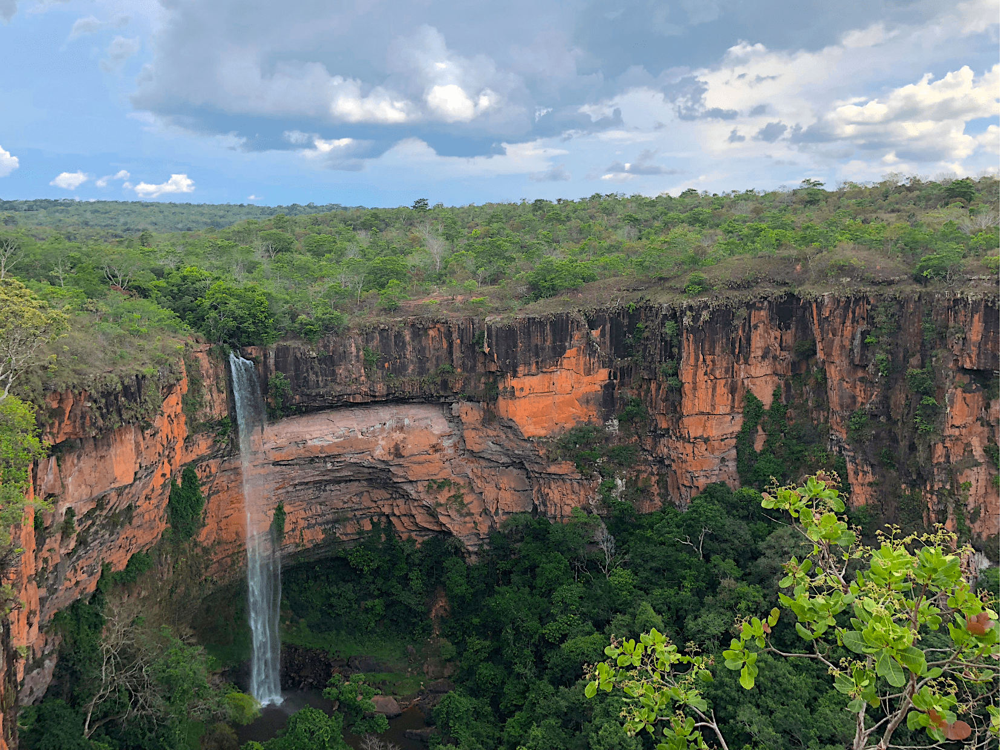
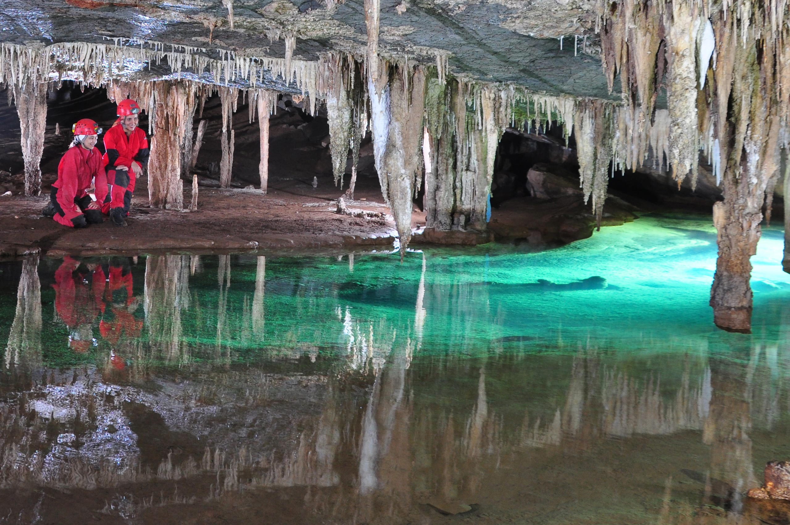

Região Centro-Oeste
Brasília - DF
Planejada por Oscar Niemeyer, Brasília se tornou uma das principais cidades turísticas do Centro-Oeste e de
todo o Brasil. Sem contar, que é um verdadeiro paraíso arquitetônico.
Afinal, os prédios governamentais são belíssimos, as ruas são amplas e os bairros muito bem organizados, cada
coisa ocupando o seu devido lugar. Além disso, a capital do Brasil conta com o belíssimo Lago Paranoá e o
Parque da Cidade Sarah Kubitschek, lugares perfeitos para relaxar. E, se você quiser ver um dos pôres do sol mais incríveis do Planalto
Central, basta visitar a Ermida Dom Bosco.
Bonito - Mato Grosso do Sul
Um dos pontos turísticos do Centro-Oeste mais procurados por viajantes de todo o mundo é a cidade de Bonito
no Mato Grosso do Sul. Essa cidade é repleta de paisagens naturais de tirar o fôlego.
Entre elas, podemos citar o Rio de Prata com suas águas cristalinas e peixinhos coloridos. Além disso, você
pode visitar a Gruta da Lagoa Azul, com águas tão azuis que parecem de mentira.E, se você gosta de esportes
radicais, o Abismo Anhumas, com suas opções de rapel e descidas de até 70 m de altura, é uma parada obrigatória.
Chapada dos Guimarães - Mato Grosso
Se você curte trilhas em mata fechada, cachoeiras, grutas, sítios arqueológicos e mirantes incríveis, com
certeza o Parque Nacional da Chapada dos Guimarães é um dos pontos turísticos da Região Centro-Oeste que
você precisa conhecer. Um paredão de pedra alaranjado cercado por uma vegetação verde e com a emblemática
cachoeira Véu da Noiva é uma das vistas mais impressionantes da Chapada. Além disso, a maior gruta de arenito do Brasil também está na
Chapada dos Guimarães.

Parque Estadual Terra Ronca - Goiás
Esse é um ponto turístico do Centro-Oeste perfeito para quem ama explorar cavernas e todas as suas belezas. O
Parque Estadual Terra Ronca abrange uma área de 57 mil hectares, sendo uma das maiores concentrações de
cavernas de toda a América Latina. A porta de entrada para esse universo subterrâneo fica na cidade de São Domingos,
em Goiás. A partir dali, você poderá visitar cavernas incríveis, lagos subterrâneos de águas cristalinas, labirintos naturais e ter muitas
outras experiências inesquecíveis.

Praia da Figueira - Mato Grosso do Sul
Uma lagoa gigante, com cerca de 60 mil m², areia macia e peixinhos de muitos tamanhos formam um dos pontos
turísticos no Centro-Oeste perfeitos para curtir com toda a família. As águas transparentes da Praia da
Figueira, juntos a areia branquinha e aos diversos quiosques na orla faz com que a gente se sinta no litoral, com o benefício de não precisar lidar com o sal das águas do mar.
Cáceres - Mato Grosso
Às margens do Rio Paraguai, a cidade de Cáceres, no Mato Grosso, é um dos pontos turísticos da Região
Centro-Oeste, perfeita para quem deseja conhecer o Pantanal brasileiro. Uma das principais atividades da
região é a pesca esportiva. Você poderá navegar pelo Rio Paraguai, conhecendo as riquezas do nosso Pantanal e
aproveitar a belíssima vista a lagoa Dolina Água Milagrosa, localizada em uma Gruta com 200 m de altura.
Rio Quente - Goiás
É impossível falar de turismo no Centro-Oeste sem citar o paraíso das águas naturalmente quentes. Rio Quente
é um resort localizado Serras de Caldas Novas, a maior bacia hidrotermal do mundo.
Por aqui, você encontra uma série de opções de lazer, como piscinas e lagos de águas cristalinas e
naturalmente quentes, um parque aquático incrível, tirolesas, atrações radicais, hotéis relaxantes e restaurantes que
valem toda a viagem. O melhor de tudo é que você pode curtir esse resort incrível sem gastar muito! Confira nossos
pacotes promocionais e venha se divertir em um dos mais belos pontos turísticos da Região Centro-Oeste do Brasil.